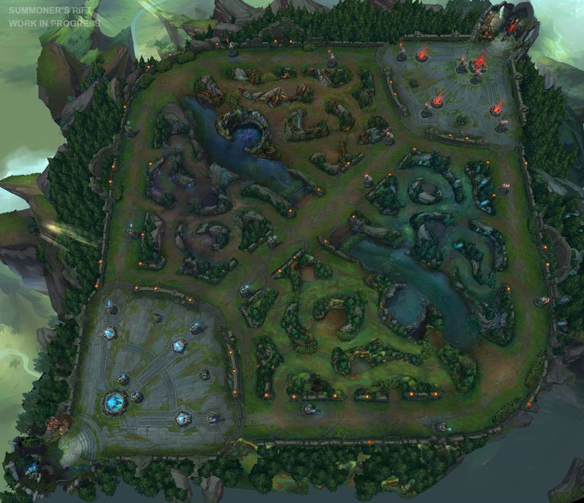
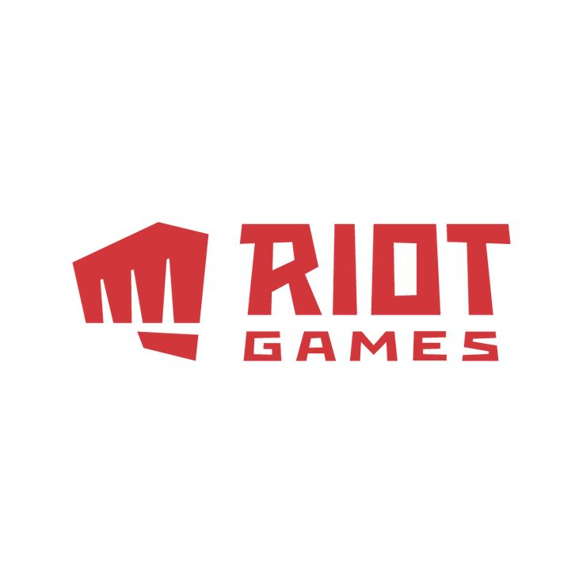
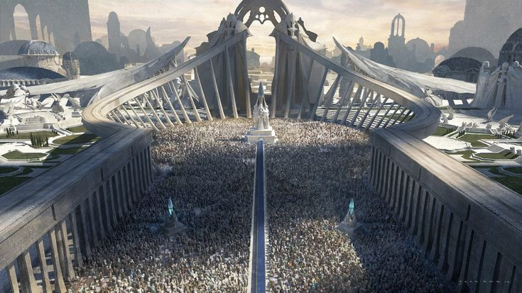
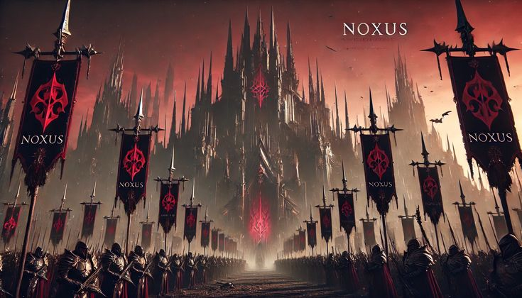
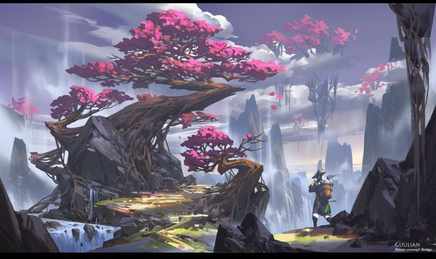
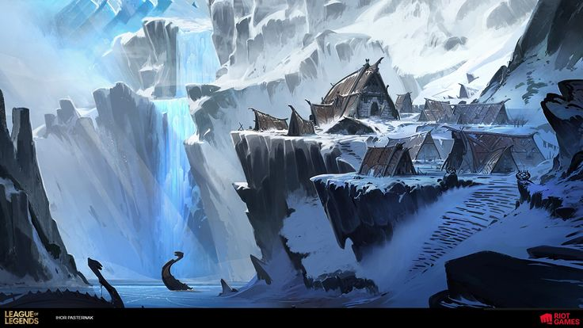
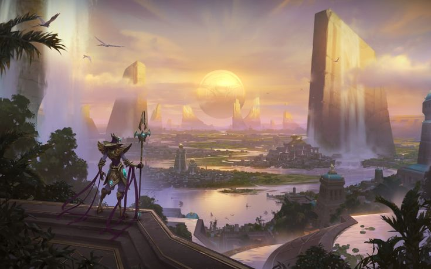
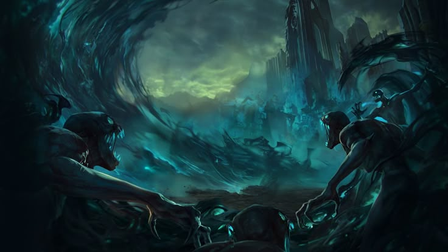
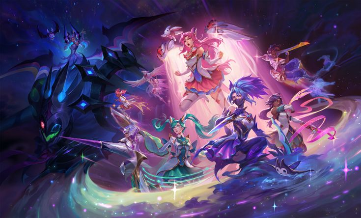

What is League of Legends?
League of Legends is a fast-paced online multiplayer battle arena (MOBA) game where two teams of five players compete to destroy the enemy Nexus, the main structure located inside each team’s base. The game focuses on teamwork, strategy, mechanical skill, and decision-making rather than just fighting.
Every match takes place on Summoner’s Rift, where players choose champions with unique abilities and roles. These champions grow stronger over time by earning gold, leveling up, and buying items. Victory depends on coordination, map control, and smart team fights.

The Origins of League of Legends
League of Legends was created by Riot Games and officially released on October 27, 2009. It was inspired by the popular Warcraft III custom map “Defense of the Ancients (DotA),” which helped define the MOBA genre.
Riot Games wanted to create a standalone game that was more accessible, competitive, and constantly updated. Unlike older games that stayed the same, League of Legends evolved every year with balance changes, new champions, and seasonal updates.
In its early days, the game had fewer than 40 champions, simpler graphics, and fewer game modes. Over time, it grew into a massive global platform with over 160+ champions and millions of players worldwide.

The World of Runeterra
The universe of League of Legends is called Runeterra. It is a vast world filled with magic, technology, ancient empires, and political conflicts. Each region has its own culture, history, and champions.
Runeterra is not just a map—it is a living world where nations compete for power, survival, and knowledge. Many champions are tied to major wars, ancient magic, or personal struggles that shape the world itself.
Major Regions of Runeterra
Demacia 🛡️
A noble kingdom built on justice, order, and honor. However, Demacia has a deep fear of magic, which creates internal conflict between tradition and freedom. Champions like Garen and Lux represent its ideals and struggles.

Noxus ⚔️
A brutal but opportunity-driven empire where strength determines status. Unlike Demacia, Noxus accepts anyone regardless of background—as long as they are strong enough to rise. It is home to champions like Katarina and Darius.

Ionia 🌸
A spiritual land connected deeply with nature and magic. After being invaded by Noxus, Ionia struggles to balance peace and violence. Champions like Ahri, Akali, and Yasuo come from this region.

Piltover & Zaun ⚙️
Piltover is a city of progress, science, and invention, while Zaun is its dangerous underground counterpart filled with chemical experiments and chaos. Together, they represent the balance between innovation and corruption.

Freljord ❄️
A harsh frozen land filled with tribal warfare, ancient ice magic, and powerful warriors. It is ruled by different factions fighting for survival and control.

Shurima ☀️
Once a powerful desert empire ruled by god-like Ascended beings, Shurima fell into ruin after the betrayal of its emperor. Now it rises again from the sands.

Shadow Isles 👻
A cursed region once known as the Blessed Isles. A magical catastrophe turned it into a land of death, spirits, and eternal darkness.

More About the League Universe
The story of League of Legends is constantly expanding through cinematics, comics, and events. Riot Games has built a deep narrative where champions are connected through wars, alliances, rivalries, and ancient secrets.
Events like the Rune Wars, the Darkin Wars, and the rise of the Void show that Runeterra is a world constantly on the edge of destruction.
The Void is one of the greatest threats in the universe—a dimension of unstoppable monsters trying to consume reality itself. Champions like Kai’Sa and Vel’Koz are tied to this cosmic danger.
Modern League of Legends
Today, League of Legends is one of the biggest esports titles in the world. The annual World Championship gathers millions of viewers and features the best professional teams competing for global dominance.
The game has also expanded beyond gameplay into music groups (like K/DA), cinematic storytelling, and the animated series Arcane, which explores the emotional stories of Piltover and Zaun.
